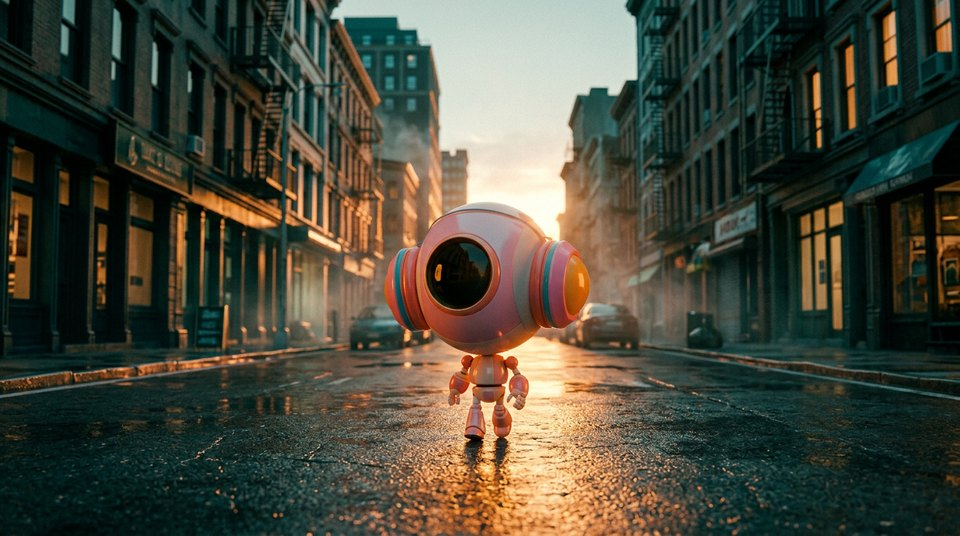

Library / Colors and Palettes
Colors and Palettes
4 keywords in this category, each one tested and explained in plain language.
Pick keywords as you browse, then press Copy for AI and paste into ChatGPT, Claude or any AI. Copy keywords gives a plain list for Midjourney or Seedance.


Teal and Orange
The classic movie color combo: warm skin tones against cool teal shadows.